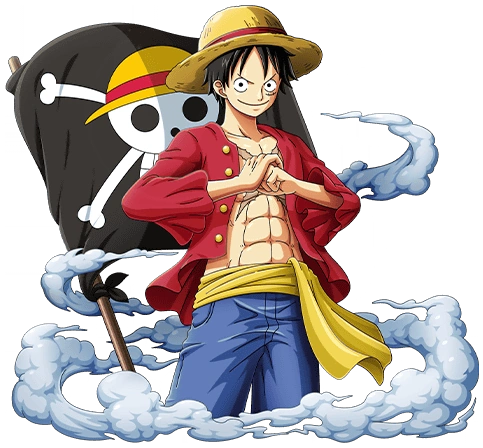

SOBRE
SOBRE
 FAVORITOS
FAVORITOS

One Piece é um anime japonês que conta a história de Monkey D. Luffy, um jovem que ganhou poderes de borracha após acidentalmente comer a fruta Akuma no Mi. Seu sonho é encontrar o tesouro One Piece e se tornar o Rei dos Piratas12. A série, que começou a ser exibida em 1999, já tem mais de 1000 episódios e é conhecida como o "anime infinito".